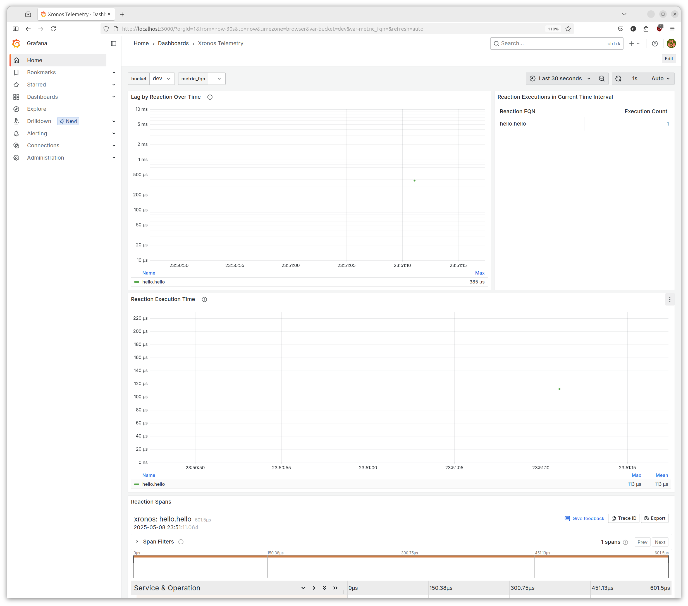

Trace Dashboard
The runtime behavior of xronos programs can be observed using the Xronos Dashboard.
System Requirements
A running Docker daemon. The Xronos Dashboard has been tested with Docker Engine version 27.2.1.
Installation
We provide the dashboard as a zip archive. Use the following commands to extract and start the dashboard.
$ unzip xronos-dashboard.zip
$ cd xronos-dashboard
$ docker compose up
Usage
Open http://localhost:3000 in your browser. This will
open the Grafana-based dashboard. On first usage, you need to log in using the
username admin and password xronos.

After logging in, the trace view opens. Initially, it will be empty.

To show trace data in the dashboard, we need to run a xronos application that
has tracing enabled. Tracing can be enabled on any application by calling
enable_tracing() on the environment. Note that this
has to happen before calling execute execute().
Modify the Hello World example like shown below.
env = xronos.Environment()
env.create_reactor("hello", Hello)
env.enable_tracing()
env.execute()
Then execute the program.
$ python hello.py
Hit the üóò Refresh button in the dashboard. The trace view should now show a single
execution of the hello reaction.

If the trace view is still empty, you were likely not quick enough. By default, the trace view shows the last 5 seconds. Try extending the time window using the drop-down menu on the left of the üóò Refresh button. For instance, you can select Last 5 minutes.
The trace view is most useful for analyzing the execution of more complex
applications. For instance, below you can see the trace view for the
YOLO example, when run with the --trace argument. Note that you
can use the drop-down just next to the üóò Refresh button and select
Auto to enable automatic refreshing, which provides a live view of
the collected data.